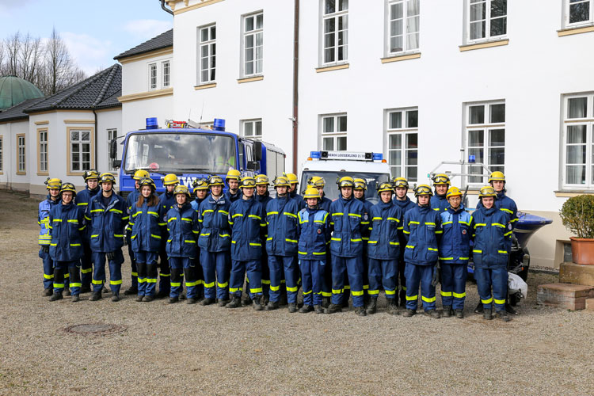
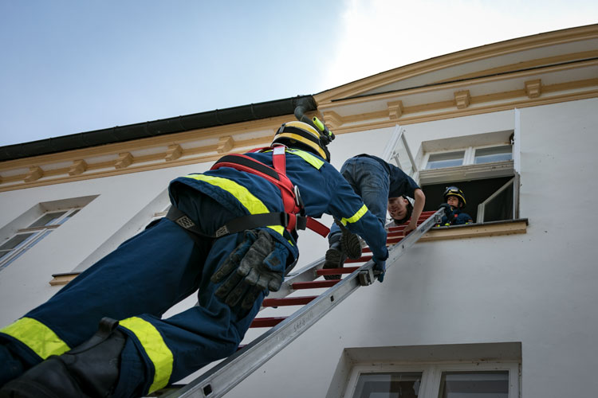
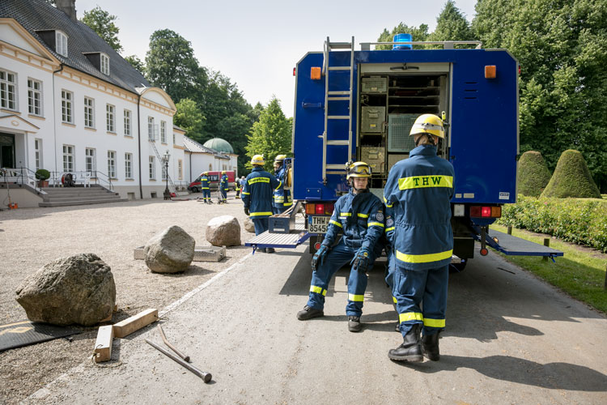
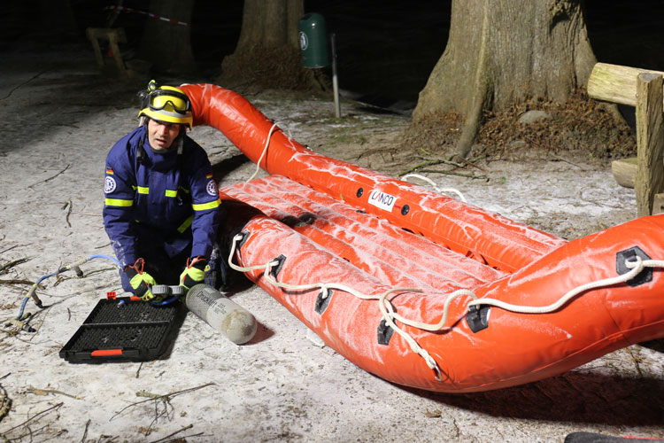

Begeisterung für Technik
Schon ab der Grundschule engagieren sich in Louisenlund derzeit über 120 Schülerinnen und Schüler in den Rettungsgilden. Als einzige Schule in Deutschland verfügt Louisenlund auf dem Bildungscampus über eine eigene Feuerwehr und ist Stützpunkt des Technischen Hilfswerks (THW) inklusive Feuerwehr- und THW-Fahrzeugflotte.
In unserem Blogbeitrag könnte Ihr mehr über das THW erfahren.
https://www.louisenlund.de/blog/louisenlunder-thw-begeisterung-fuer-technik-und-ehrenamtliches-engagement/
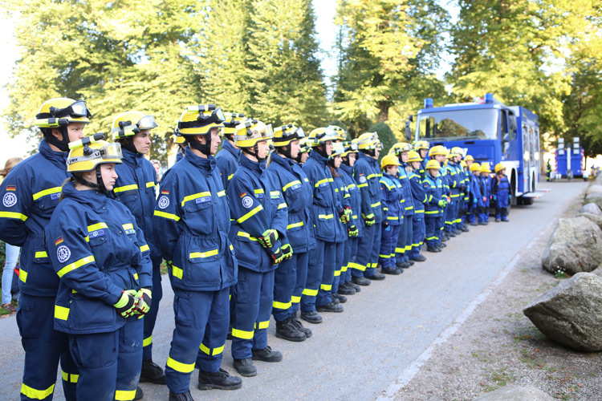
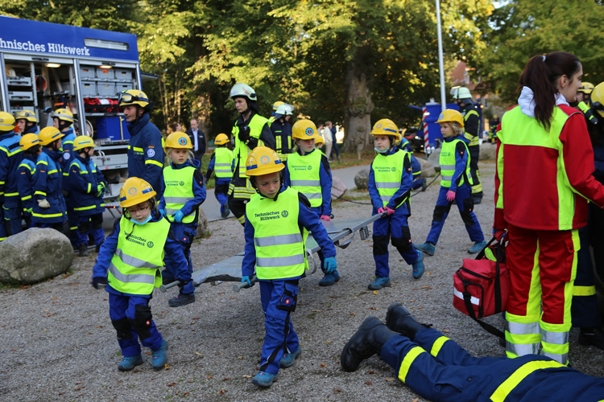
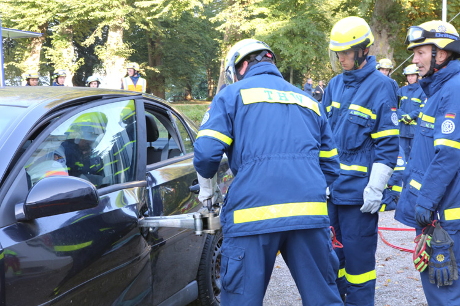
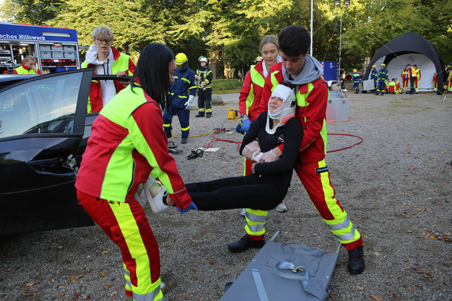
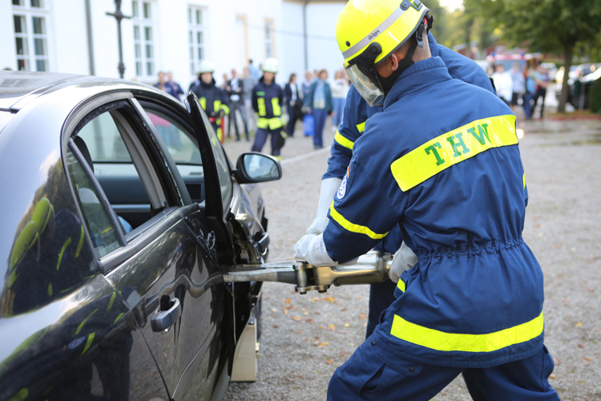
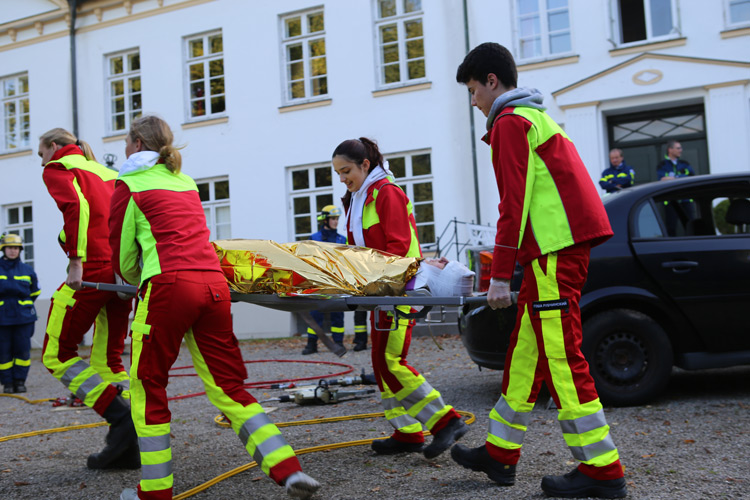
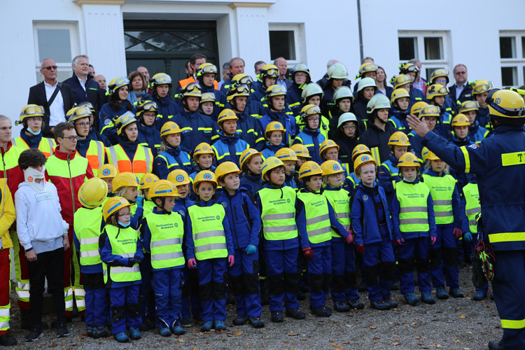
Gut gerüstet für den Ernstfall
Das verantwortungsvolle Handeln und gesellschaftliches Engagement zählen zu den Werten Louisenlunds. Diese erlerne die Schülerinnen und Schüler auch in den Rettungsgilden: dem THW, der Feuerwehr, bei den First Respondern und bei den Rettungsschwimmern. Damit die Jugendlichen für den Ernstfall gerüstet sind, muss viel geübt werden. Mehr darüber lesen Sie in unserem Blogbeitrag.
https://www.louisenlund.de/blog/louisenlunder-thw-begeisterung-fuer-technik-und-ehrenamtliches-engagement/